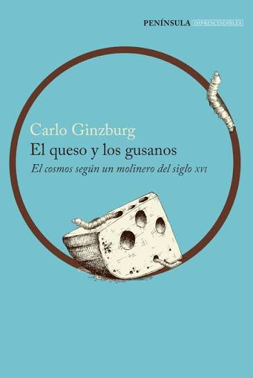
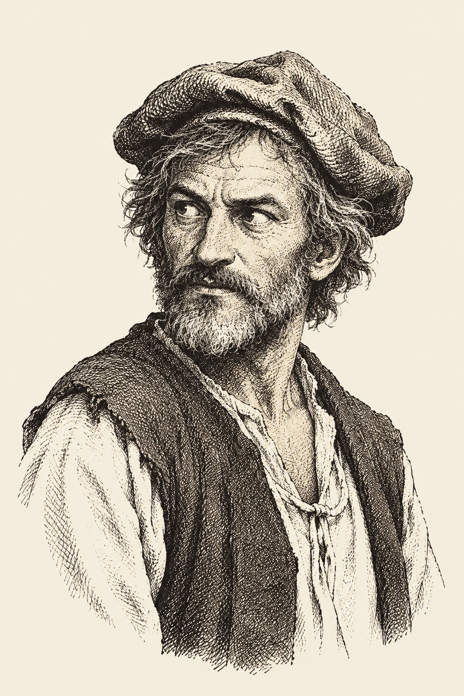

Sinopsis
Menocchio, un molinero del siglo XVI que sabe leer y escribir, comienza a creer que el mundo surgió del «caos» y que de este nació una «masa como se hace el queso con la leche». Esta visión cosmogónica lo meterá en problemas y causará su muerte.
Reseña / Opinión Personal
Leer El queso y los gusanos es una experiencia fascinante pero exigente. Carlo Ginzburg nos entrega un libro que logra un equilibrio narrativo entre una novela y un ensayo académico riguroso: nos enteramos de todo y al mismo tiempo de nada... maravilloso. La construcción del texto incluye numerosas citas (realmente numerosas, jajaja) en su idioma original, además de las traducciones; esto puede ralentizar el ritmo de lectura y entorpecer la experiencia para un lector poco habituado a la historiografía. Sin embargo, si se aborda con calma (personalmente lo leí para una clase), se entiende perfectamente, ya que no es una obra que busque atrapar a los lectores de forma superficial, sino que exige una disposición activa y un genuino interés por la historia del libro, la transmisión del conocimiento y las dinámicas de la Iglesia en esa época.
Para mí, el gran valor de la obra radica en la reflexión —o más bien en la tesis— que retrata la cultura popular (comprendida desde su riguroso sentido histórico y social, y no bajo las concepciones contemporáneas) a través de Domenico Scandella. El autor nos permite asomarnos a la brecha entre la cultura oral campesina y la cultura escrita de las élites, mostrándonos el filtro único con el que un hombre común de la época procesaba sus lecturas. La reconstrucción de la cosmogonía de Menocchio no solo es un logro metodológico, sino una ventana brillante a las grietas de una época desconocida para nosotros donde la libertad de pensamiento intentaba abrirse paso.
Para mí, esta es una lectura que podría ser muy valiosa para quienes disfrutan de la historia cultural y los procesos de circulación de las ideas (mejor dicho... ¿te gustaría ver los libros desde otra perspectiva? Pues qué esperas... ¡LÉELO!). Además, considero que aunque el contexto microhistórico del personaje es muy accesible y completo, para exprimir al máximo el ensayo, el lector que se aventure en estas páginas debería contar con cierta curiosidad conceptual previa; de lo contrario, algunos pasajes podrían dejar lagunas. En definitiva, si yo fuera dictadora, prohibiría este libro.
¿Te interesa leerlo?
Personaje: Domenico Scandella (Menocchio)

Domenico Scandella, el molinero de Montereale«Soy Domenico Scandella, alias "Menocchio", un molinero nacido en Montereale durante el siglo XVI. Soy un lector curioso, autodidacta y rebelde. Me gusta hablar mucho.»
Un molinero terco, curioso y apasionado por la lectura en una época donde los libros eran un privilegio escaso. Menocchio no se limita a asimilar lo que lee; reinterpreta los textos sagrados y profanos a través del filtro de su propia cultura campesina y cotidiana, desafiando sin temor las verdades absolutas del dogma eclesiástico.
Línea del tiempo: Procesos de la Inquisición
Es denunciado a la Inquisición en Aquilea por proclamar abiertamente sus ideas sobre el origen del mundo y sus críticas a la Iglesia.
Sometido a interrogatorios. Se retracta de sus opiniones y es condenado a prisión perpetua, debiendo vestir el habitello (símbolo de penitencia herética).
Tras años en libertad condicional, reincide expresando sus opiniones heterodoxas. Denunciado nuevamente, es calificado como relapso por el Santo Oficio.
Es ejecutado en la pira bajo la orden directa del Papa Clemente VIII por negarse a renunciar a su cosmogonía personal.
Frases Favoritas
«Todo era un caos... y de aquella masa se formó un queso, tal como el queso se hace de la leche, y en él se crearon gusanos, y estos fueron los ángeles...» — Menocchio
«En el pasado se podía acusar a los historiadores de querer conocer únicamente las "gestas de los reyes"... hoy cada vez más se quiere conocer lo que pensaban los hombres comunes.» — Carlo Ginzburg